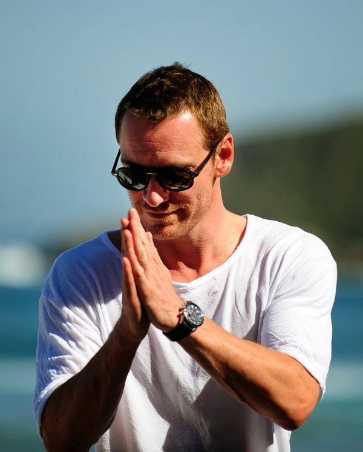

Обо мне
Привет! Меня зовут Илья, и я — заядлый путешественник с 10-летним стажем. За это время я посетил более 40 стран и 3 континента.
Этот блог я создал, чтобы делиться своими маршрутами, лайфхаками для бюджетных путешествий и вдохновлять людей открывать мир. Здесь вы найдёте честные отзывы, советы по планированию и красивые фотографии.
Почему я люблю путешествовать? Каждая поездка — это новый опыт, знакомства с удивительными людьми и возможность посмотреть на жизнь под другим углом. Моя цель — показать, что путешествовать может каждый, независимо от бюджета.
Если у вас есть вопросы или идеи для совместных проектов — смело пишите через форму на странице "Контакты". Буду рад новым знакомствам!
